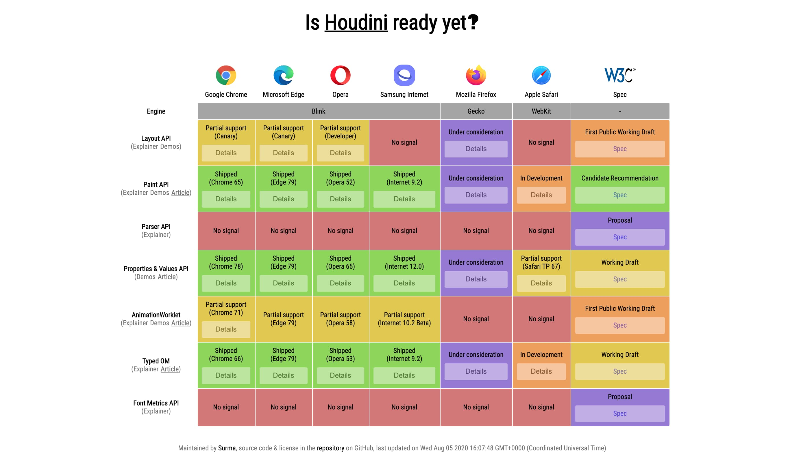
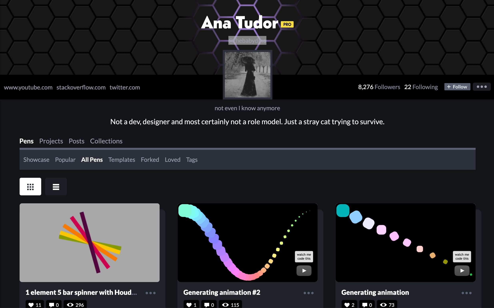
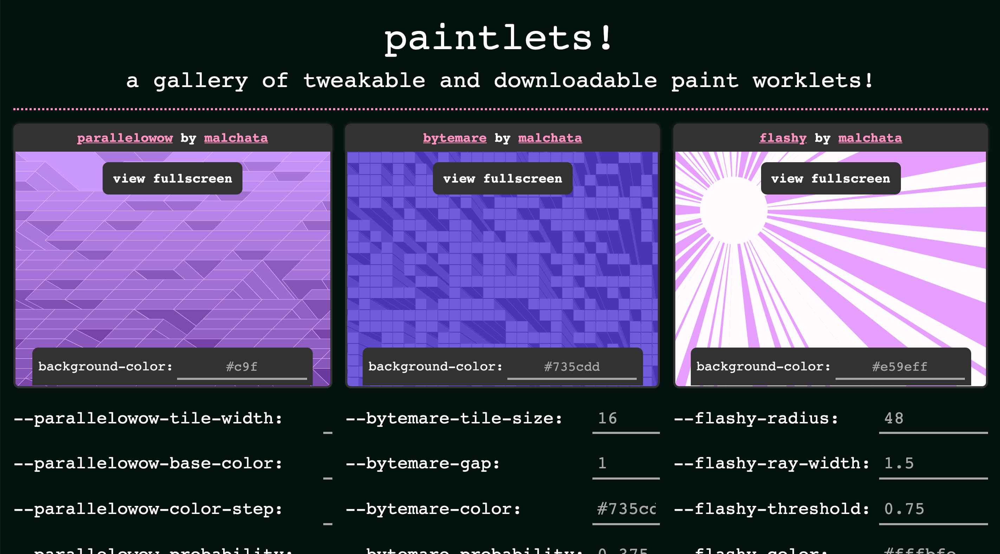

Escape the box with Houdini
Ruth John | @rumyra
Hello
I'm Ruth | @rumyra
👩🏻💻 🎙 🎓
ctrl-i dev tools - paint worklet in sublime
Hi everyone, quick intro - I'm Ruth. You can find me on everything as @rumyra
I'm a creative dev, I run a podcast, I teach
CSS Houdini
🧚🏻♀️ ✨
This is an introductory talk to what's involved with houdini
So today, we're going to have a lesson on CSS Houdini. Back last year I helped write some demos for MDN docs
I'm going to share with you what I learnt whilst doing this.
What is Houdini?
Suite of APIs
Extend CSS through JS
🚨 Houdini is basically just a buzz word. Someone came up with it and it stuck, because there's a whole bunch of apis that are being drafted and written, which allow us as developers better access to CSS, through javascript. Houdini is just the word that describes all of them together 🚨
At the moment, if a new feature comes out in CSS, say conic gradient, as we see with new features, it may take some time for those features to be implemented by browsers, polyfills as they stand are cumbersome and unperformant, and so Houdini looks to solve this problem.
It is not, and I say this strongly, a new shiny css thing we are going to polyfill.
Let's take a look at the api's currently under the suite of Houdini.
Typed OM CSS Paint API Properties & Values Layout API Animation Worklet
So there's Typed OM, Pant API, Properties & Values, Layout API and Animation Worklet. This is what I'm going to be talking about today
Today I am going to deep dive into Typed OM, Paint * properties & values. and discuss Layout and animation.
time & I'll show you why

https://ishoudinireadyyet.com/
This is the support for CSS Houdini as it stands at the time of this talk.
I've omitted parser & font metrics because they are red and there's no implememntation yet
Talk about each api
So let's start from the top - with probably what I deem to be the most important - Typed OM.
Typed OM
Access to CSS Values as types in JS
So let's start from the top - with probably what I deem to be the most important - Typed OM.
This pretty much underpins all the other APIs, standalone its very verbose and can seem cumbersome as I'm just about to take you through it
To sum it up: Access to CSS values as types in javascript
Now the easiest way for me to explain this is to show you how we access styles in js at the moment
Click Me
button {
border-width-top: 4px;
}
Just a little bit of syntax before we move on. Selectors, properties, values.
Click Me
const borderWidth = window.getComputedStyle(buttonEl).borderTopWidth; // "4px"
// some string matching, testing & calculation...
buttonEl.style.borderWidth = "2px";
If we want to compute a new top border value with javascript, for whatever reason. As it stands this is how we access that value, and re add it to our button. To do the calculation we have to do some weird string thing where we count back from the string because there could be any number of numbers at the beginning, and that's because we're sure it's pixels and not some other unit, like rem,
Extracting the number isn't easy.
Then we gotta do the math and string it back together and it's 2020.
Wouldn't it be cool if we could do something like this:
Click Me
buttonEl.computedStyleMap() // returns all css!
const borderWidth = buttonEl.computedStyleMap().get('border-top-width');
// Returns: {value: 4, unit: "px"}
// So we can now do:
const newWidth = borderWidth.value + 2; // gives us 6
This is a new method 'computedStyleMap' which you invoke on an element and it will return all the CSS styles available on that element.
With the get method you can specify one property, but the really good thing about this interface, is the value is returned as an object
An object containing the value and the unit. The value is numerical, so it's easy to use out the box.
The type of value that is returned is a CSSUnitValue.
CSSStyleValueCSSNumericValueCSSUnitValueCSSMathSum
This is a sub class of a parent type called 🚨 CSSNumericValue
CSSStyleValue is the parent class of all the different types
There's lots of these value types - this is the idea behind typed om, that eventually all values in css will have a type
As well as CSSUnitValue, we have CSSMathSum for when you use the calc function in CSS
CSSTransformValueCSSKeywordValueCSSUnparsedValueCSSImageValue
As well as our numeric values, there are a number of others:
transform value, this is for any values we would use in the transform property: translate, rotate, skew...
keyword value so a word that's not a incased in quotes like a string. So inherit or auto, or block, inline
unparsed - values that aren't known, like when we declare custom properties.
CSSImageValue is a type for where you would use an image, background, border, mask. But can be an actual image or a gradient or custom paint, so is intentionally opache at this time.
There's going to be more - css colour value
button {transform: rotate(30deg);}
// Returns: {
// angle: {value: 30, unit: "deg"},
// is2D: true
//}
All these different value types return an object similarly to what we've seen with unit value.
For instance a rotate value would look a little something like this:
Click Me
new CSSUnitValue(10, px);
CSS.px(10);
// both create {value: 10, unit: "px"}
So we've seen how we get a CSS value affecting an element, and the different types of values we could receive. How do we create one, and then set it?
We create the CSSStyleValue
Couple of ways - we can use the class constructor new - or (if it's a CSSUnitValue) the easier factory method of CSS.px (units)
Click Me
buttonEl.attributeStyleMap().set('border-top-width', CSS.px(10));
buttonEl.attributeStyleMap.has('border-top-width') // returns true
buttonEl.attributeStyleMap.delete('border-top-width') // removes from attribute styles
buttonEl.attributeStyleMap.clear() // removes all attribute styles
buttonEl.attributeStyleMap().get('border-top-width') // returns CSSUnitValue
we saw .style method earlier. In js as it stands at the moment we set values on the style attribute - this doesn't change but we have access to that via the styleAttributeMap
This represents all the styles within the style attribute.
And we get a few more methods,
Couple of other methods on the sytleattrmap - get has delete clear
let sum = CSS.px(54).add(CSS.px(30));
// Returns: CSSUnitValue {value: 84, unit: "px"}
const cm = CSS.in(2).to('cm');
// Returns: CSSUnitValue {value: 5.08, unit: "cm"}
const fontSize = CSS.em(1.2);
CSS.em(1.2).equals(fontSize); // true
If you're working with numeric types there's a few methods to be aware of:
You can add subtract divide and multiply with methods.
You can convert units! there's a 'to' method. Only works on absolute units are this time, but still handy
There's an equals method for testing if two unit values are a match.
And these are just a few. It seemed a bit cumbersome before with all the value types right. But if we are getting this functionality for all our values in the future, it really changes how we power our styles with javascript.
Properties & Values
Custom Properties
So we know Typed OM is cool, but it might seem a little strange to start, and a _lot_. Sometimes you just want to add styles, or you have classList and you can toggle now and that's ok. Be careful of performance. But the real thing with Typed OM is how it underpins all the other APIs.
This is easily seen with properties & values. We've all seen css variables - I'm using them for the button:
button {
--mainColour: blue;
background-color: --mainColour;
}
So I have always struggled with the term CSS variables and I won't fight with people over this because I have better things to do with my life, but when you set a variable in a program you write, to update that variable, you reset it further in your code.
Custom properties in CSS are live, I update them in my js and they update in real time: like this...
Click Me
buttonEl.style.setProperty("--mainColour", "pink")
This is how I'm changing the colour of the button in this talk. It's the same as the backgrounds - they're all running from this mainColour property, which I update for every section - but this is not properties and values just yet.
Click Me
background-image:
linear-gradient(180deg, var(--mainColour), var(--lighterMain))
;
The hover style for the button uses a background gradient
Now this can get a little bit annoying - because now I have to list all the different colours in the talk, purple, blue, pink & their relative lighter versions - I'm not using any preprocessors, like sass, so I have no access to any colour functions like lighter - which may or may not be coming into spec
So let's use houdini to polyfill and generate a lighter colour
const mainColour = revealOuter.attributeStyleMap.get("--mainColour");
// split string into dif vals & add more to lum
const splitCol = colFromHsla(mainColour[0]);
splitCol.lum = splitCol.lum+10;
// lighter col string
const lighterCol = `hsla(${splitCol.hue}, ${splitCol.sat}%, ${splitCol.lum}%, ${splitCol.op})`;
First of all let's use javascript to generate a lighter colour - now remember we don't have a colour type in typed om yet - when we do this _will_ be easier.
typed om attristylemap to get our main colour
const mainColour = revealOuter.attributeStyleMap.get("--mainColour");
// split string into dif vals & add more to lum
const splitCol = colFromHsla(mainColour[0]);
splitCol.lum = splitCol.lum+10;
// lighter col string
const lighterCol = `hsla(${splitCol.hue}, ${splitCol.sat}%, ${splitCol.lum}%, ${splitCol.op})`;
I'm running a function here to split the hsla string to hue, sat, lum & op vals
It's worth mentioning, when we get CSSColourVals in Typed OM I won't need to do this and my life will be amazing and wow.
Now I can use props and vals & register this new colour as a custom property - this is the properties and values api.
const mainColour = revealOuter.attributeStyleMap.get("--mainColour");
// split string into dif vals & add more to lum
const splitCol = colFromHsla(mainColour[0]);
splitCol.lum = splitCol.lum+10;
// lighter col string
const lighterCol = `hsla(${splitCol.hue}, ${splitCol.sat}%, ${splitCol.lum}%, ${splitCol.op})`;
Then I'm putting the string back together
Now, now I can use props and vals & register this new colour as a custom property - this is the properties and values api.
CSS.registerProperty({
name: '--lighterMain',
syntax: '<color>',
inherits: true,
initialValue: lighterCol
});
We use the registerProperty method, we define a name - we have to do this and give it the dash dash
Syntax is the type, and this sort of matches up with typed om, that's whats underneath the hood
Inherits is set to false by default, this means elements further down the dom tree don't have access to it - or rather the value - unles we se that to true
Then we have the initial value, now we have to be pretty explicit with this. If you're defining the unit, the initial value needs the unit.
I didn't need to do all that in CSS, I have the power of javascript to do the colour changes.
Ana Tudor

If you're interested in more, check out ana tudors work on codepen
Workers & Worklets
ASIDE - before I move on I just want to break, aside for just a moment to mention workers and worklets.
Workers in javascript mean running a script off the main thread, you have your javascript file, you register it as a worker and you can send messgaes (data) to and from it from your main script or main thread and it runs off the main thread - yes we're all ok good
A worklet is also running off the main thread, but it has a predefined class, with built in props and methods exposed (api) - again you register and make.
Cool ok I can move on
CSS Paint API
🎨
Allows us to register a paint worklet (see what I did there) in js, for use whereever we might want to use an image in our css - so backgrounds, borders, image masking - now you might think - we have images, but, my class, we can draw it. This means resizing, no downloading. The worklet harnesses the canvas api. let me show you.
.slide {
background-image: paint(dots);
}CSS.paintWorklet.addModule('dots.js');
The backgrounds you have seen all the way through this talk, have been using the paint api - and actually, if I refresh this page, it should change colour.
If I resize the window, the highlight will change too. THis is how you do it. You register the paint worklet in your main script, you create this worklet. Then you call it within your css, where you would use an image in your css.
registerPaint('dots', class {
// use this function to retrieve any custom props defined for the element
static get inputProperties() { return ['--mainColour']; }
paint(ctx, size, props) {
// set colour
const colour = props.get('--mainColour');
// draw dots here - using html5 canvas api
}
});
Which is your worklet.
Function pass in name and class
Automatically registered as a paint worklet class
that gives you dimensions, any custom properties which are affecting the element. And in there you can use the canvas api to draw whatever you want as your _image_
CUSTOM ARGUMENTS
Paint worklet - this is the class
Jeremy Wagner | @malchata

If you're interested in more, Jeremy Wagner has a great site showcasing some paint worklets he has put together
Layout API
Works much like CSS Paint
OK these last two I don't have any demos for, they are the least supported and we don't have too much time left, but worth a mention
Layout API, works much like CSS Paint in that you register a layout worklet, and that gives you access to layout features of an element and it's child elements.
.slide {
display: layout(coolLayout);
}CSS.layoutWorklet.addModule('myCoolLayout.js');
You use the layout function, where you reference your registered layout worklet, as a value for the display property
Inside the registerLayout worklet you get access to children, edges, constraints, the Typed OM style map, that's enough to do clever maths of positioning things.
Animation Worklet
There's a lot of worklets all of a sudden isn't there! This one works a little differently than before
We set it up as usual, but we need both keyframes, which is our actual animation, and a timeline.
CSS Houdini
🧚🏻♀️
Well done class! There will be more about layout and animation in version two of this class, which will probably end up being a workshop actually.
Resources
Check my twitter | @rumyra
Well done class! There will be more about layout and animation in version two of this class, which will probably end up being a workshop actually.
Check out my twitter after this, I've got a list of articles & demos which you can refer to.
Follow the following people because they are awesome:
Thank You
Ruth John | @rumyra
And y'all thought this was about audio huh :D
Ask me questions
Thank you very much for inviting me here and making me do a _serious_ talk Bruce, Gabi. I'll see you at the next one.